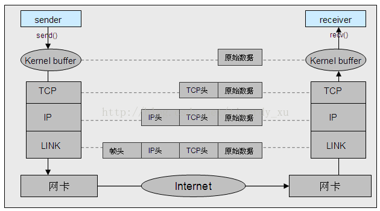
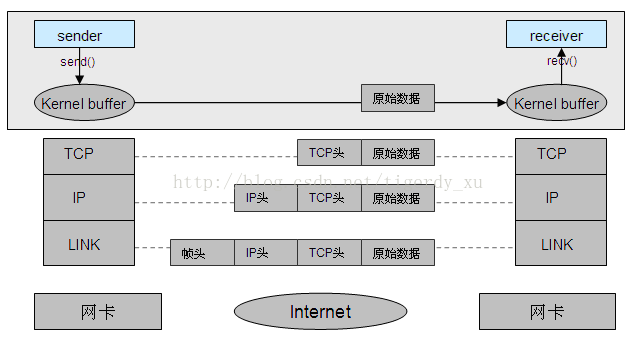

AF_INET 域与 AF_UNIX 域 socket 通信原理区别
1 AF_INET 域 socket 通信过程

典型的 TCP/IP 四层模型的通信过程。
发送方、接收方依赖 IP:Port 来标识，即将本地的 socket 绑定到对应的 IP 端口上，发送数据时，指定对方的 IP 端口，经过 Internet，可以根据此 IP 端口最终找到接收方；接收数据时，可以从数据包中获取到发送方的 IP 端口。
发送方通过系统调用 send() 将原始数据发送到操作系统内核缓冲区中。内核缓冲区从上到下依次经过 TCP 层、IP 层、链路层的编码，分别添加对应的头部信息，经过网卡将一个数据包发送到网络中。经过网络路由到接收方的网卡。网卡通过系统中断将数据包通知到接收方的操作系统，再沿着发送方编码的反方向进行解码，即依次经过链路层、IP 层、TCP 层去除头部、检查校验等，最终将原始数据上报到接收方进程。
2 AF_UNIX 域 socket 通信过程

典型的本地 IPC，类似于管道，依赖路径名标识发送方和接收方。即发送数据时，指定接收方绑定的路径名，操作系统根据该路径名可以直接找到对应的接收方，并将原始数据直接拷贝到接收方的内核缓冲区中，并上报给接收方进程进行处理。同样的接收方可以从收到的数据包中获取到发送方的路径名，并通过此路径名向其发送数据。
3 相同点
操作系统提供的接口 socket(), bind(), connect(), accept(), send(), recv()，以及用来对其进行多路复用事件检测的 select(), poll(), epoll() 都是完全相同的。收发数据的过程中，上层应用感知不到底层的差别。
4 不同点
- 建立 socket 传递的地址域，及 bind() 的地址结构稍有区别：
- socket() 分别传递不同的域 AF_INET 和 AF_UNIX
- bind() 的地址结构分别为 sockaddr_in（制定 IP 端口）和 sockaddr_un（指定路径名）
- socket() 分别传递不同的域 AF_INET 和 AF_UNIX
- AF_INET 需经过多个协议层的编解码，消耗系统 cpu，并且数据传输需要经过网卡，受到网卡带宽的限制。AF_UNIX 数据到达内核缓冲区后，由内核根据指定路径名找到接收方 socket 对应的内核缓冲区，直接将数据拷贝过去，不经过协议层编解码，节省系统 cpu，并且不经过网卡，因此不受网卡带宽的限制。
- AF_UNIX 的传输速率远远大于 AF_INET
- AF_INET 不仅可以用作本机的跨进程通信，同样的可以用于不同机器之间的通信，其就是为了在不同机器之间进行网络互联传递数据而生。而 AF_UNIX 则只能用于本机内进程之间的通信。
5 使用场景
AF_UNIX 由于其对系统 cpu 的较少消耗，不受限于网卡带宽，及高效的传递速率，本机通信则首选 AF_UNIX 域。
不用多说，AF_INET 则用于跨机器之间的通信